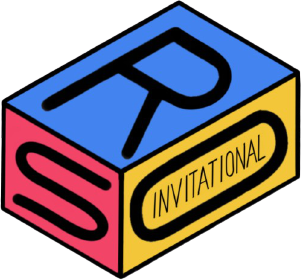

Directors
Aileen Bae

Himank Chhaya

Rishi Aka

Co-Directors
Ayush Patel

Daniel Bae

Event Supervisors
Please refrain from contacting the event supervisors directly about event information. All questions should be directed to director@rsoi.org.
Aashay Mody

Dynamic Planet B
Ornithology B
Adhrit Maiti

Ecology B
Fossils B
Agasya Mukkapati

Forestry B/C
Microbe Mission B
Allison Guan

Experimental Design B/C
Allison Peterson

Ecology C
Amy Peng

Forestry B/C
Anatomy & Physiology C
Anandavel Sakthi

Crime Busters
Optics C
Fermi Questions B/C
Forensics
Ornithology C
Andrew Xing
Metric Mastery B
Aneesh Iyer

Codebusters B/C
Anna Zamastsyanina

Ecology B
Reach for the Stars
Anthony Egan

Materials Science C
Chemistry Lab C
Athiwat Ackaramongkolrotn

Astronomy C
Geologic Mapping C
Meteorology B
Reach for the Stars B
Brycen Nelson

Potions and Poisons B
Road Scholar B
Claire Huang

Entomology B
Claire Lin

Codebusters C
Claire Long

Ecology B
Wind Power B
Cloris Shi

Anatomy and Physiology B
Collin McCord

Air Trajectory C
Tower B
Connor Jin

Optics B
Connor Chang

Dynamic Planet B
Meteorology B
Darsh Singhvi

Air Trajectory C
Electric Vehicle C
Robot Tour C
Derek Lee

Codebusters B
Elisabeth Chai

Anatomy & Physiology B
Ornithology B/C
Emmy Bonser

Dynamic Planet C
Geologic Mapping C
Fermi Questions B/C
Eric Lin

Robot Tour C
Eric Liu

Helicopter B/C
Evan Xiang

Microbe Mission C
Eydan Collazo De Jesus

Air Trajectory B
Mission Possible B
Florence Liang

Ecology C
Harrison Liu

Crime Busters B
Huong Nguyen

Microbe Mission B
Isaac Jones

Metric Mastery B
Fermi Questions B/C
Ishan Patel

Anatomy & Physiology C
Jasmine Xie
Fossils B
Potions and Poisons B
Jerry Huang

Helicopter B/C
Ornithology B/C
Fermi Questions B/C
Bungee Drop
Keith Dai

Fermi Questions B/C
Disease Detectives B
Melody Hong

Microbe Mission C
Malachi Dawson

Fossils C
Manank Doshi

Astronomy C
Dynamic Planet C
Reach for the Stars B
Melinda Zhao

Fermi Questions B
Entomology B
Microbe Mission B
Ornithology B
Nicholas Susanto

Forensics C
Nick Chao

Disease Detectives B
Olivia Lu

Crime Busters B
Optics B
Air Trajectory B
Revanth Raparla

Experimental Design B
Road Scholar B
Run Zhou

Entomology C
Fossils C
Ruth Lu

Disease Detectives C
Sahil Gandhi

Entomology C
Shiven Gupta

Wind Power B
Quantum Quandaries B
Sourish Pramanik

Optics C
Sukhad Mutatkar

Experimental Design C
Tower C
Surya Reddy

Disease Detectives C
Tony Mei
Tower B/C
Vikram Nguyen

Wind Power C
Vilius Staraitis

Scrambler B
Weijing Chen